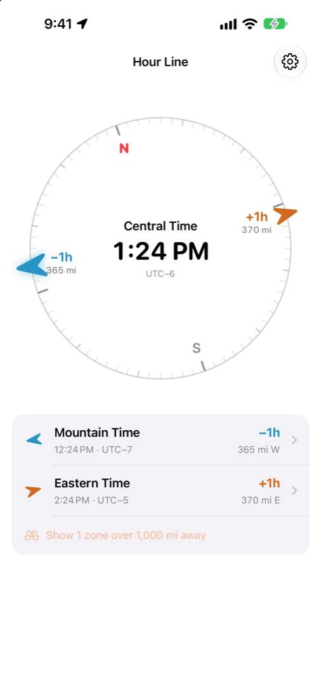
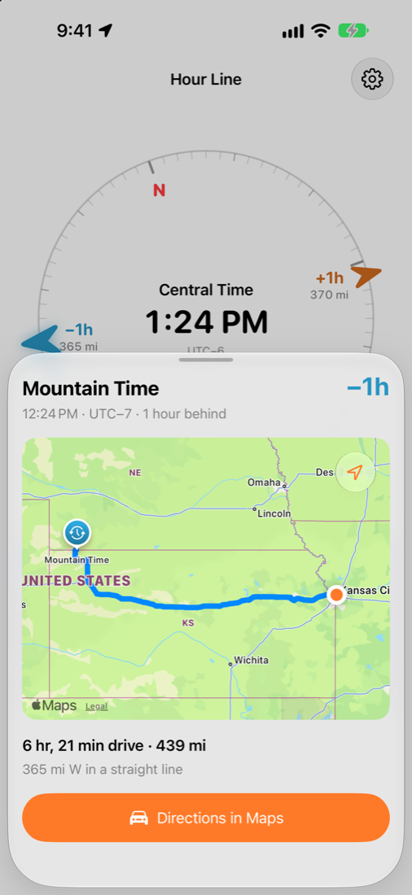

Hour Line
A compass that points to every time zone next to you, and tells you how far away it is.
Download on the App Store

Every adjacent zone
One arrow for each time zone you'd reach heading straight that way, with the distance and the time there.
Feel it click
Turn around and the phone clicks each time you point exactly at a zone.
Drive across the line
Tap a zone for a driving route to just across its border.
Heads-up alerts
Get told when you're approaching or crossing into a new time zone, with a Live Activity on your Lock Screen.
Widgets and Apple Watch
The nearest zone on your Home Screen, Lock Screen and watch face.
Private by design
Works offline. Your location never leaves your device. No accounts, ads or tracking.